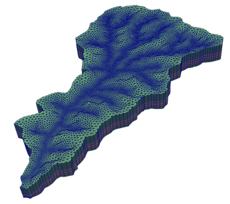

TINerator — GIS Mesh Generation for FEM¶
TINerator is a Python module for the rapid creation of quality 2D and 3D unstructured meshes from GIS data sources. It provides a set of GIS and mesh processing and manipulation submodules that interface cleanly, along with robust visualization methods, that allow for an end-to-end meshing workflow for FEM applications.
Mesh generation should be simple in Python. TINerator promotes a human-readable, intuitive API framework that’s easy to use without sacrificing power.
A quality triangulation can be generated from a DEM in as few as two lines of code:
>>> import tinerator as tin
>>> dem = tin.gis.load_raster("my_dem.tif")
>>> tr = tin.meshing.triangulate(dem, min_edge_length=0.001)
>>> tr.view()
And extruded into the subsurface (Z-direction) with just two more:
>>> layers = [("constant", 50., 2, 1)]
>>> vol_mesh = tin.meshing.extrude_mesh(tr, layers)
>>> vol_mesh.view()
Features¶
Read/write GeoTIFFs, ESRI Shapefiles, and more - all common GIS formats are supported
Built-in GIS operations like reprojecting, raster clipping, and resampling
Adaptive mesh refinement using watershed delineation or any imported shapefile
High-quality uniform and refined Delaunay triangulations using meshing kernels from JIGSAW, PyGMSH, MeshPy and more
ExodusII export supported, with full support for side sets, node sets, and element sets.
Advanced 2D and 3D visualization capabilities, including live 3D rendering within Jupyter notebook cells
Much more
Contents:¶
- User Guide
- TINerator API Reference
- GIS Module Functions
- Loading files
- Reprojection
- Resample a Raster
- Clipping a Raster with Geometry
- Generate flowlines from a DEM using watershed delineation
- Converting a triangulation into a Geometry object
- Rasterize Geometry
- Create a pyproj.CRS object
- Compute the distance field from a Geometry object to all Raster cells
- Raster object
- Geometry object
- Meshing Module Functions
- Mesh object
- Surface mesh generation
- Misc. Functions
- GIS Module Functions